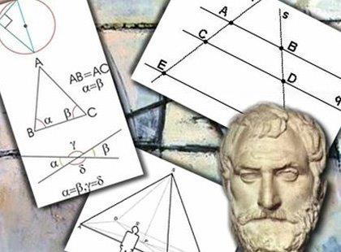

|  |
Hisotria da MatematicaCivilizações antigas Egito antigo: Os antigos egípcios desenvolveram um sistema numérico baseado em dez, além de técnicas de medição e geometria para construção e agrimensura. Mesopotâmia: Os mesopotâmios criaram o sistema numérico de base 60 (sexagesimal), desenvolveram a álgebra e fizeram progressos na resolução de equações lineares. Grécia antiga Pitágoras: Pitágoras e seus seguidores exploraram as propriedades dos números e desenvolveram a teoria dos números, incluindo o famoso teorema de Pitágoras. Euclides: Euclides é conhecido por seu trabalho "Os Elementos", que estabeleceu os fundamentos da geometria euclidiana e introduziu métodos rigorosos de prova matemática. Idade Média e Renascimento Árabes e matemáticos islâmicos: Os matemáticos árabes preservaram e expandiram os conhecimentos matemáticos gregos, introduzindo o sistema decimal e a álgebra simbólica. Fibonacci: Leonardo Fibonacci popularizou o sistema numérico hindu-arábico e introduziu a sequência de Fibonacci, com importantes aplicações em matemática e ciências naturais. Era da Revolução Científica Descartes e geometria analítica: René Descartes desenvolveu a geometria analítica, que relaciona a álgebra e a geometria, permitindo a representação de figuras geométricas por meio de equações algébricas. Isaac Newton e Gottfried Leibniz: Independentes um do outro, Newton e Leibniz desenvolveram o cálculo infinitesimal, um ramo fundamental da matemática que descreve o comportamento de grandezas variáveis. Séculos XIX e XX Gauss e a teoria dos números: Carl Friedrich Gauss contribuiu para a teoria dos números, resolvendo problemas fundamentais nessa área e estabelecendo a base para pesquisas posteriores. Georg Cantor e a teoria dos conjuntos: Cantor introduziu a teoria dos conjuntos, explorando conceitos como infinitude e cardinalidade, revolucionando a compreensão dos fundamentos da matemática. Avanços contemporâneos Teoria dos jogos: John von Neumann e Oskar Morgenstern desenvolveram a teoria dos jogos, que estuda estratégias e interações entre jogadores em diversos contextos. Teoria do caos: O estudo do caos, desenvolvido por matemáticos como Edward Lorenz, revela padrões complexos em sistemas dinâmicos e influenciou várias áreas, incluindo meteorologia e física. |